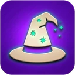
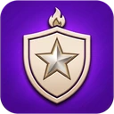
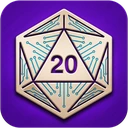
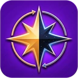
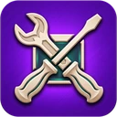
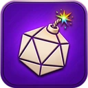

Foundry VTT Modules

Outrider's CantripsCollection of useful cantrip enhancements for RAW and Homebrew.
Outrider's Hero PointsConfigurable Hero Point rerolls for PF2e and SF2e, with a polished-metal Hero Die and Pass the Torch.
Outrider's RNGA better random number generator for dice rolls, using WebCrypto.
Outrider's Stellar AttunementSF2e Solarian helper. Cycles Stellar Attunement and keeps token art in sync.
Outrider's Web ToolsOpens the web tools below in popup windows from Foundry VTT, with launcher macros.
Things Got DiceyAn unofficial theme pack for Dicer: custom dice sets, textures, and roll effects.
Web Tools
Collaborations
Awesome modules by other authors.